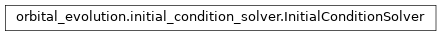

orbital_evolution.initial_condition_solver module¶
Class Inheritance Diagram¶
Define class for finding initial conditions to match current properties.
-
class
orbital_evolution.initial_condition_solver.InitialConditionSolver(*, planet_formation_age=None, disk_dissipation_age=None, evolution_max_time_step=1.0, evolution_precision=1e-06, evolution_timeout=0, orbital_period_tolerance=1e-06, spin_tolerance=1e-06, initial_eccentricity=0.0, initial_inclination=0.0, period_search_factor=2.0, scaled_period_guess=1.0, max_porb_initial=100.0, initial_secondary_angmom=(0.0, 0.0))[source]¶ Bases:
objectFind initial conditions which reproduce a given system now.
-
__call__(target, star, planet)[source]¶ Find initial conditions which reproduce the given system now.
Parameters: - target –
The target configuration to reproduce by tuning the the initial conditions for. The following attributes must be defined:
- age:
- The age at which the system configuration is known.
- Porb:
- The orbital period to reproduce.
- Psurf | Pdisk | Wdisk:
- The stellar surface spin period to reproduce or the disk locking period or the disk locking frequency.
The following optional attributes can be specified:
- planet_formation_age:
- The age at which the planet forms in Gyrs. If not specified the planet is assumed to form either ‘-past_lifetime’ Gyrs before ‘-age’ or as soon as the disk dissipates.
- past_lifetime:
- An alternative way of specifying when the planet forms. If the ‘-planet_formation-age’ attribute is not defined, the planet is assumed to form this many Gyr before ‘-age’.
- disk_dissipation_age:
- The age at which the disk dissipates in Gyrs. If not specified, it must have been defined when this solver was initialized.
- star – The star to use in the evolution, should be instance of evolve_interface.EvolvingStar and its dissipative properties should be defined.
- planet – The planet to use in the evolution. Should be an instance of evolve_interface.LockedPlanet
Returns: Initial orbital period.
- Initial disk period if matching observed stellar spin or stellar spin if initial disk period is specified.
Further, the solver object has an attribute named ‘binary’ (an instance of (evolve_interface.Binary) which was evolved from the initial conditions found to most closely reproduce the specified target configuration.
Return type: - target –
-
__init__(*, planet_formation_age=None, disk_dissipation_age=None, evolution_max_time_step=1.0, evolution_precision=1e-06, evolution_timeout=0, orbital_period_tolerance=1e-06, spin_tolerance=1e-06, initial_eccentricity=0.0, initial_inclination=0.0, period_search_factor=2.0, scaled_period_guess=1.0, max_porb_initial=100.0, initial_secondary_angmom=(0.0, 0.0))[source]¶ Initialize the object.
Parameters: - planet_formation_age – If not None, the planet is assumed to form at the given age (in Gyr). Otherwise, the starting age must be specified each time this object is called.
- disk_dissipation_age – The age at which the disk dissipates in Gyrs.
- evolution_max_time_step – The maximum timestep the evolution is allowed to make.
- evolution_precision – The precision to require of the evolution.
- orbital_period_tolerance – The required precision with which the orbital period at the present age must be reproduced.
- spin_tolerance – The required precision with which the primary spin period at the present age must be reproduced.
- initial_eccentricity – The initial eccentricity with which to start the evolution.
- period_search_factor – The factor by which to change the initial period guess while searching for a range surrounding the known present day orbital period.
- scaled_period_guess – The search for initial period to bracked the observed final period will start from this value multiplied by the final orbital period.
- max_porb_initial – The largest initial orbital period in days to try before declaring a set of initial conditions unsolvable.
Returns: None
-
_find_porb_range(guess_porb_initial, disk_period)[source]¶ Find initial orbital period range where final porb error flips sign.
Parameters: - guess_porb_initial – An initial guess for where the sign change occurs.
- disk_period – The disk locking period to assume during the search.
Returns: A pair of initial orbital periods for which the sign of the final orbital period error changes.
Return type:
-
_try_initial_conditions(initial_orbital_period, disk_period, save=False)[source]¶ Get present orbital and stellar spin periods for initial conditions.
Parameters: - initial_orbital_period – The initial orbital period to calculate the deviation for.
- disk_period – The disk locking period to calculate the deviation for.
Returns: The present day orbital period of the system resulting when the evolution is started with the input periods.
The present day surface spin of the star resulting when the evolution is started with the input periods.
Return type:
-
stellar_wsurf(wdisk, orbital_period_guess, return_difference=False)[source]¶ The stellar spin frquency when reproducing current porb.
Parameters: - disk_frequency – The angular velocity of the star when it forms.
- orbital_period_guess – A best guess value for the initial orbital period.
- return_difference – If True, instead of the actual stellar angular velocity, the function returns the difference from the observed value.
Returns: - The angular velocity with which the star spins at the present age for an evolution scenario which reproduces the current orbital period. Or the difference between the spin frequency and the target spin frequency if return_difference is True.
The following are returned only if return_difference is False:
- The initial orbital period which reproduces the specified final orbital period as close as possible.
- The closest final orbital period found (starting with porb_initial).
Return type:
-